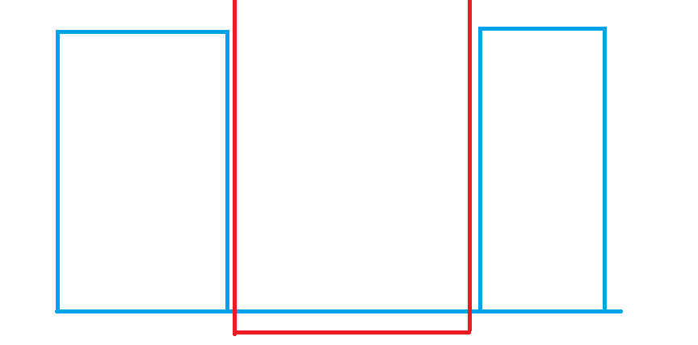

矩阵切割算法学习笔记
例题
1147. Shaping Regions @ Timus Online Judge
大意：一坨有颜色的矩阵依次覆盖，最后每个颜色有多少种面积。
坑点：矩阵不一定在白布上。
做法
讲讲做法，对于一个矩阵 $X$ 覆盖在另外一个矩阵 $Y$ 上，我们可以尝试把 $Y$ 没有被覆盖的部分分成好几份。
但是要怎么切割，怎样切割会比较优秀呢？（切的尽量的少）
我们记 $X$ 左下角 $x,y$ 坐标为 $X(x_1)$ 和 $X(y_1)$ ，右上角是 $X(x_2)$ 和 $X(y_2)$ ，$((a,b),(c,d))$为以 $(a,b)$ 为左下角，$(c,d)$ 为右上角的矩阵。
我们不妨考虑 $X$ （红色）和 $Y$ （蓝色）在 $x$ 轴投影的位置关系：

如果 $X$ 的左边的 $x$ 坐标在 $Y$ 的 $x$ 轴投影内，即：$Y(x_1)<X(x_1)<Y(x_2)$，那么 $Y$ 在 $[Y(x_1),X(x_1)]$ 上的矩阵都没有被覆盖，即：$((Y(x_1),Y(y_{1}),(X(x_1),Y(y_{1}))$ 没有被覆盖，右边同理。
但是还有中间的情况，$X,Y$ 在 $x$ 轴投影重叠部分的上方（红色框住的位置）：这个区间既包括 $Y$ 矩阵，也包括 $X$ 矩阵未被覆盖的部分（可能没有），这个时候分 $y$ 轴讨论就行了。
不难发现，这样在任何情况下都是最优的割法。
给上一份代码，网上抄的，当时学的拿来用了，现在不知道是谁的了QAQ，如果知道是谁的通知一声，我马上标注，放上这份代码的原因是和上面讲的比较符合，比较好理解。
1 |
|
当然，这份代码有几个细节可以优化一下：
1 | if(p.x1<op[nt].x1) |
然后，其实四个元都可以如此去做，然后我就自己打了一份代码：
1 | //这份代码其实参考了参考链接中的代码 |
时间空间消耗等会说。
另外的做法
此题另一种矩阵切割的实现方式
观察就会发现，实际上上面的实现方法，是对一个矩阵，用后面的矩阵对其进行切割，但实际上，我们可以换个角度出发，从可用面积的角度出发，即将背景墙扔进去，从后往前切割，每个矩阵会对背景墙割掉一块，其实这就相当于对每一个矩阵找其没有被后面矩阵覆盖的部分。
1 |
|
这确实是一个不错的转化思路，从每个矩阵最后在背景板的占地面积出发做题。
关于两种做法的空间以及效率问题，空间上的消耗比较小，空间复杂度 $O(q)$ ，但是时间上的消耗就比较玄学了，这个实现方法封顶是 $O(背景板面积)$ ，而上面的做法封顶应该是 $O(所有矩阵面积)$ ，但是实际远小于这个上限，都可以通过该题。
但是呢，我们来比较一下这两个做法：
不难发现，在小规模下，矩阵之间并未相交多次时，这个实现方法对背景板的切割次数较多，较慢，上面的方法因为相交不多，所以会较快，但实际因为规模小，可能不痛不痒，但是在超大规模下，背景板被占满好几次，那么这个方法要远远快于上面的方法，因为这个方法封顶背景板面积，而上面每个矩阵都要计算每个矩阵对其的影响，因此要慢上不少。
但是在中等的规模的数据下呢，鉴于我比较菜，没有时间没有实力去从理论分析（或者实验分析）其在随机数据下的时间表现，也不知道这两个做法较好的卡法，所以希望如果有读者知道，私信我一下，我会写在博客内。当然，我们还是可以阿巴一下的，不难发现，背景板切割只用对一个矩阵切一次（虽然这种切割比较大型），而上面的做法对每个矩阵都要去用后面矩阵切割一次，理论来讲上面做法应该会更慢一点，而在做此例题也确实如此，上面的方法我改了一下每个矩阵后面矩阵的切割顺序（从后往前改成从前往后），超时了，但是即使不改，其依旧比该方法满了一倍的时间。再阿巴一下卡法，显然，很容易构造出一个使上面做法时间超过这个做法时间的数据（把整个背景板加入到数据中）。因此，这道题目方法的选择，我更推荐这种做法。
当然，矩阵切割本身就是暴力算法，优点就是代码好打，比较灵活，空间占用小，缺点就是时间玄学，因此在使用的时候，应该根据题目，主动去思考常数更加小的实现方法，从而骗到更多的分数或者更快的AC题目。
关于例题线段树做法
当然，这道题目我一开始的做法是线段树做法，首先离散化，那么 $n,m$ 范围便只剩下了 $2000$ ，接着，类似最早的思考，考虑每个矩阵被其余矩阵覆盖了多少，类似扫描线一样扫过去就行。
时间复杂度：$O(q^2\log{q})$
空间复杂度：$O(q)$
1 |
|
当然，你也可以用线段树实现矩阵切割第二种方法类似的思路（每个矩阵在背景板的占地面积），但是貌似这样子常数更大。QMQ
总结
介绍了矩阵切割算法，一个灵活的、空间小的、代码好打的、好想的、但时间玄学的算法，在范围在千以内的时候可以试着使用一下，万以上就不知道了。（其实我也就用过一次，什么时候可以用还是你们自己去摸索吧。）
参考资料
题解 P6432 【[USACO3.1]形成的区域 Shaping Regions】 - blog-lhm - 洛谷博客 (luogu.com.cn)